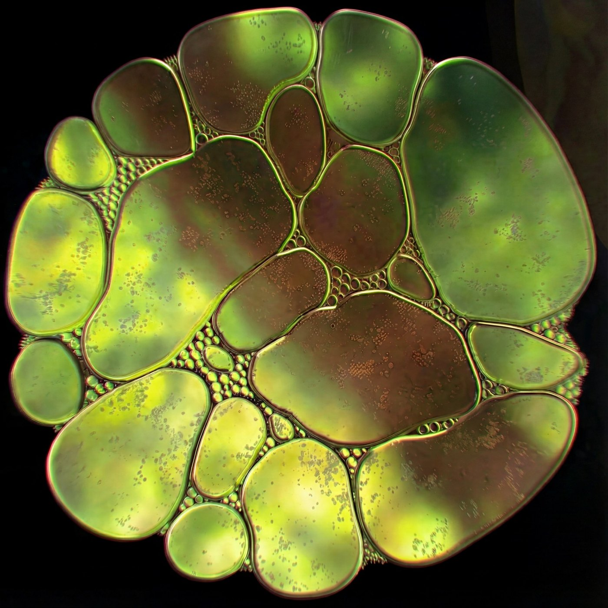

Projet grenouille
D'un être monocellulaire à une grenouille dans une rue, par un grand dézoom. Elle marche, saute hors du sol et réapparaît géante sur le mur, où elle écrase un bus.
1. Des cellules qui couvrent tout le lab
L'idée : partir d'un être monocellulaire, puis un grand dézoom jusqu'à la grenouille dans une rue.
On génère des cellules, puis on retravaille la couleur avec H3 Image Edit vers celle qu'aura la grenouille : brun, jaune, vert.

Prompt couleur
apply the exact colors of image 2 to image 1, brown yellow green
Puis une grande image carrée, plus grande que le lab : cette texture doit pouvoir bouger et interagir, il faut de la marge.
Prompt de l'extension
Extend the cell pattern of <Picture 1> so it fills the entire frame, edge to edge. Remove the grey background and the round outline completely: no circle, no border, no empty space, no vignette. Same cells everywhere: rounded translucent cells of varied sizes, packed tightly together, thin glowing membranes between them, small darker organic shapes inside each cell, fine granular texture in the gaps. Keep the same colors and light: patches of bright yellow, lime green and deep brown, with soft diagonal shadows across the pattern. Cells keep a similar size across the whole image, so it looks like a close-up of a living tissue that continues beyond the frame. Photorealistic microscope photography, sharp, high detail.
2. La mitose : une image clé au début, une à la fin
Première frame : l'image des cellules où l'on efface toutes les cellules sauf une. Dernière frame : l'image avec toutes les cellules. Le prompt décrit un plan fixe de mitose qui dure tout le clip.
Prompt
Static camera, microscope view, plain light background. Real living tissue growing: a single cell slowly divides by mitosis, its membrane stretching and pinching until it splits in two. Then each cell keeps dividing, one after another, never all at once. The growth is continuous from the very first frame to the very last frame: at every moment some cells are dividing, and the colony never pauses and never finishes early. It spreads outward steadily, the edge creeping forward like a living organism, reaching the borders of the frame only at the very end of the video. Everything is alive and soft: membranes wobble and breathe, the fluid inside each cell swirls slowly, cells squeeze and push against their neighbors and deform as new ones appear, the dark shapes inside drift and split too. Smooth, slow, organic motion, no mechanical movement, no cuts, no fades, no morphing. Photorealistic microscope footage.
Avec un détourage, on ne garde que l'animation qui nous convient, et on la pose sur le lab dans Blender.
3. La grenouille : du dessin au rendu, en plusieurs passes
Le point de départ : le dessin de la grenouille, de profil et de dessus. Il passe plusieurs fois dans H3 Image Edit jusqu'à une grenouille satisfaisante.
Prompt des passes
Faithfully refine the reference drawing. Keep exactly the same composition, poses, proportions and colors. Pure watercolor painting in the style of the reference, cleaner and more finished, shapes defined only by color and soft painted edges, with no pencil lines and no outlines. White background.
4. La peau, avec l'identité de la grenouille
On croppe son dos tout seul, et on génère une grande texture de peau avec ce crop comme guide : la peau garde les rayures et les couleurs de cette grenouille.
Prompt
Turn <Picture 1> into semi-realistic green tree frog skin, seen in a close-up from above. Keep exactly the same composition: the long wavy brown stripe on the left running from top to bottom, the second lighter stripe entering at the bottom right, the yellow-green band between them, the darker green edges. Semi-realistic look, halfway between a detailed nature illustration and a macro photograph: smooth, slightly moist skin with a soft satin sheen, tiny rounded bumps and pores, fine granular speckles, subtle darker flecks along the stripes, soft color gradients from yellow to green. The brown stripes have soft natural edges, slightly darker at the borders. Keep a light painterly softness in the color transitions, but the skin texture is sharp and detailed everywhere. The skin fills the entire image edge to edge. No eyes, no legs, no background.
5. Le grand dézoom avec Add Guide
Cellules en frame 0, peau en frame -1. Les premiers essais faisaient du morphing ; « powers-of-ten zoom » a donné un vrai recul.
Prompt
Static top-down view, one single continuous fast camera pull-back, straight up, no rotation, no cuts. The camera rushes backward, accelerating like a powers-of-ten zoom: the scale changes quickly, the cells shrink fast and the frog skin is revealed in a few seconds. It starts inside living tissue: packed glowing cells under a microscope, pulsing and breathing. Everything is alive and in motion. As the camera pulls back fast, the cells shrink rapidly and fuse together: membranes dissolve like soap bubbles merging, the cytoplasm flows from one cell into the next, neighboring cells melt into soft rounded bumps of skin. The brown cells migrate and gather like living pigment, flowing together to grow the two wavy brown stripes, which stretch and undulate as they take shape. The yellow and green cells spread and blend into the smooth skin gradients. The surface becomes wet and glistening, tiny bright droplets bead up, pores open. The camera slows down at the very end and settles on the frog skin, which keeps breathing: it slowly swells and relaxes, ripples travel across it, everything moves like living flesh. Fluid, soft, biological motion at every moment, never mechanical, never a crossfade, never a jump. Semi-realistic macro photography. No text.
Même chose de la peau à la grenouille, avec trois guides : peau (0), dos (60), grenouille entière (-1). Celui du milieu tient l'échelle.
Prompt
Static top-down view. One single, fast, continuous camera pull-back, straight up, no rotation, no cuts: a powers-of-ten zoom out with a steady exponential speed, we clearly feel the change of scale. It starts very close on the moist frog skin, with its brown stripe, bumps and glistening speckles. The camera rushes backward: the skin becomes the back of the frog, the two brown stripes appear side by side, then the head and the two glossy eyes enter the frame, then the legs with their webbed toes and round orange pads, until the whole frog is seen from above, in the middle of a plain white background. The camera slows down at the very end and settles. The frog is alive the whole time: its back slowly swells and relaxes with each breath, its throat pulses, its skin glistens. At the end it blinks once and its toes twitch lightly. It stays in place and does not jump or turn. The change comes from the zoom, not from morphing. Same frog, same skin, same colors from the first to the last frame. Semi-realistic macro photography. No text.
Les deux vidéos n'avaient pas la même vitesse : on mesure l'échelle image par image et on retime pour un zoom à vitesse constante.
6. Le décor : la ruelle
La ruelle part d'un nouveau dessin de la bande : la flaque, le journal, la plaque d'égout, les façades sur les murs.

Prompt
Faithfully render the reference image. Keep exactly the same layout, proportions and positions of every element. Very tall vertical unfolded strip for an immersive room: the middle part is the floor, the two ends are the two facing walls. Middle (floor): a close-up top-down view of a wide city street. The road is wider than the frame and fills it edge to edge, only grey asphalt, no sidewalks and no curbs visible. A large shallow rain puddle in the center reflecting the sky in light cyan, a round dark manhole cover at its lower left edge, a crumpled sheet of newspaper on the wet ground at its upper right, a small drain grate on the right. Top end (wall 1): the street rises into eye-level perspective with vanishing lines toward the horizon, a bus approaching in the distance at the center, a bus stop with a blue shelter and a "Bus Stop" sign on the right sidewalk, a red fire hydrant on the left sidewalk, building facades on both sides. Bottom end (wall 2, upside down): same street in eye-level perspective, a car on the road at the left, building facades on both sides. Smooth continuous transition between floor and walls, as if the street folds up onto the walls. Realistic rendering, overcast daylight, wet asphalt, soft reflections.
Elle est ensuite déformée pour que les trottoirs raccordent aux pliures, suit le même dézoom que la grenouille, et un shader projette le sol sur les murs depuis l'œil du spectateur.
7. Les sprites de la grenouille
Premier réflexe : animer la grenouille directement sur tout le sol. Ça ne tient pas.
Deuxième essai, avec plus de contrôle : une vidéo de trajectoire (un point rouge), la grenouille posée sur le point en frame 0, et la grenouille en référence.
La grenouille devient donc un sprite : un clip par action (repos, marche, saut), seule sur fond blanc. Elle peut par exemple n'avancer que quand quelqu'un s'approche, déclenchée dans TouchDesigner ou Smode.
⬇ Workflow de la vue qui bascule (.json)
Prompt du saut
Top-down drone tracking shot: the camera flies directly above the frog and follows it, always looking straight down at 90 degrees, never tilting. The frog stays perfectly centered in the frame. The background is a plain seamless pure white surface with no texture, so the tracking movement is invisible. The green tree frog, seen from directly above, jumps forward. It crouches, then jumps: its body stretches long, hind legs extend straight backward, front legs reach forward, toes spread, and it grows slightly bigger in the frame at the peak of the jump because it rises toward the camera. Then it comes down, shrinks back to its normal size as it lands, and folds its legs under its body into the exact resting pose of the first frame. The whole jump is seen strictly from above, like a drone filming a frog jumping on a white floor: the belly and the underside of the feet are never visible, no shadow, no horizon. Same angle, same orientation from first to last frame, seamless loop.
On n'utilise que certaines frames d'une vidéo générée : fond retiré, chaque image recalée sur le corps, pas parasites coupés. C'est Blender qui la déplace, en suivant chaque poussée de patte.
8. Un événement : la grenouille géante et le bus
Elle saute hors du sol et réapparaît géante sur le mur. Rue vide en frame 0, grenouille de dos en frame -1, puis le saut sur le bus.
Prompt de l'arrivée
Fixed tripod shot, completely static camera, the frame never moves: no pan, no tilt, no zoom, no shake. The street, the buildings, the bus stop, the fire hydrant and the bus stay at exactly the same position for the whole clip. A rainy empty city street, light drizzle, wet asphalt reflecting the grey sky, thin mist between the buildings. A giant green tree frog enters the frame by jumping in from above and behind the camera: first its shadow sweeps across the wet asphalt, then the frog flies into the frame in a high arc, seen from behind, legs stretched out, and lands heavily in the middle of the street close to the camera. Water splashes up from the asphalt around it on impact, the bus stop shakes slightly. After landing the frog settles into its sitting pose seen from behind, legs folded, breathing slowly, and stays still facing the bus. It ends exactly in the pose and position of the last frame. Semi-realistic, heavy and powerful amphibian motion, realistic weight and impact. Static locked-off camera, identical framing from first to last frame.
⬇ Workflow de l'arrivée (.json)
Prompt du bus
Fixed tripod shot, completely static camera, the frame never moves: no pan, no tilt, no zoom, no shake, no camera follow. The street, the buildings, the bus stop and the fire hydrant stay at exactly the same position for the whole clip. A giant green tree frog, as big as a truck, sits seen from behind in the middle of a rainy empty city street, breathing slowly, facing a white city bus parked further down the street. The frog crouches, its hind legs tense, then leaps forward in a high arc down the street and lands heavily on top of the bus. The bus roof caves in under its weight, the windows shatter and spray glass, the chassis folds and crumples, the tires burst, water and debris splash across the wet asphalt, the bus stop shakes. The frog stays on the crushed bus for a moment, its throat pulsing, then leaps again high and to the right and exits the frame. The wrecked bus remains in the street, smoking slightly, rain keeps falling. Semi-realistic, heavy and powerful amphibian motion, realistic weight and impact, overcast rainy light. Static locked-off camera, identical framing from first to last frame.
9. Le lab grenouille
IA ou à la main ?
- À la main : le dessin de la grenouille et de la ruelle, effacer toutes les cellules sauf une, cropper le dos, déformer la rue aux pliures, retimer le dézoom, choisir les frames utiles, déplacer le sprite patte par patte, poser les ondes.
- À l'IA : les textures (cellules, peau), le rendu de la grenouille et de la rue, les transitions du dézoom, chaque action de la grenouille en gros plan, l'événement du bus.
Le point rouge le montre bien : l'IA sait suivre un trajet, mais pas garder une petite grenouille nette sur 18 mètres de sol. Le trajet, on le fait à la main ; l'IA fournit la grenouille.